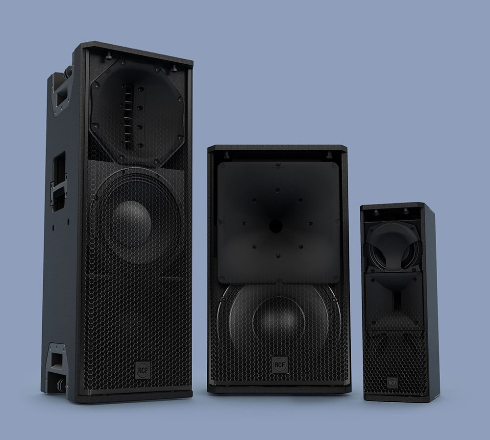
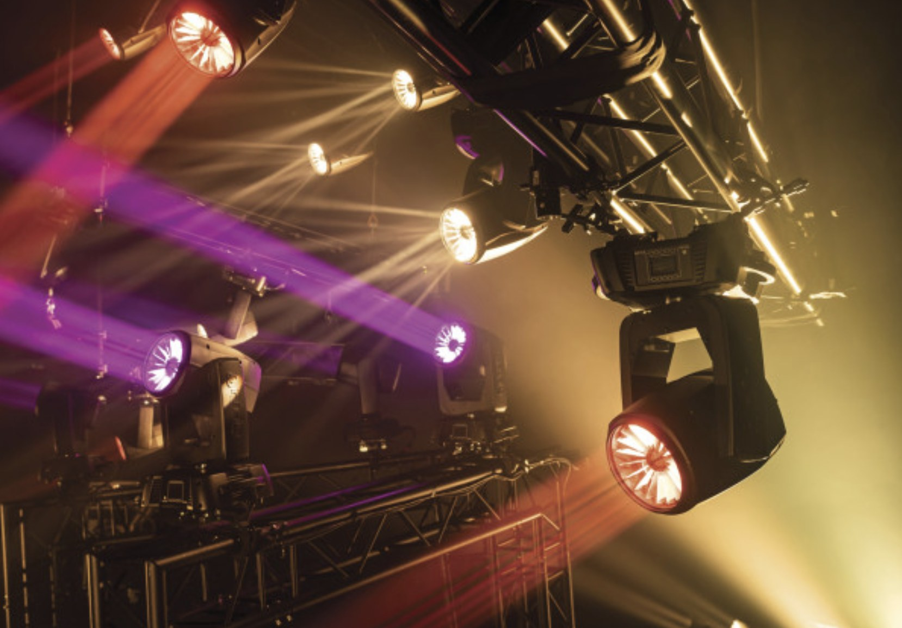
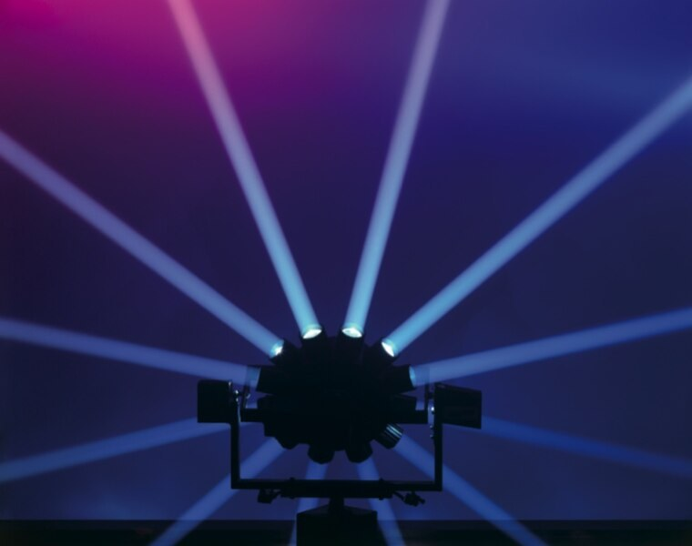
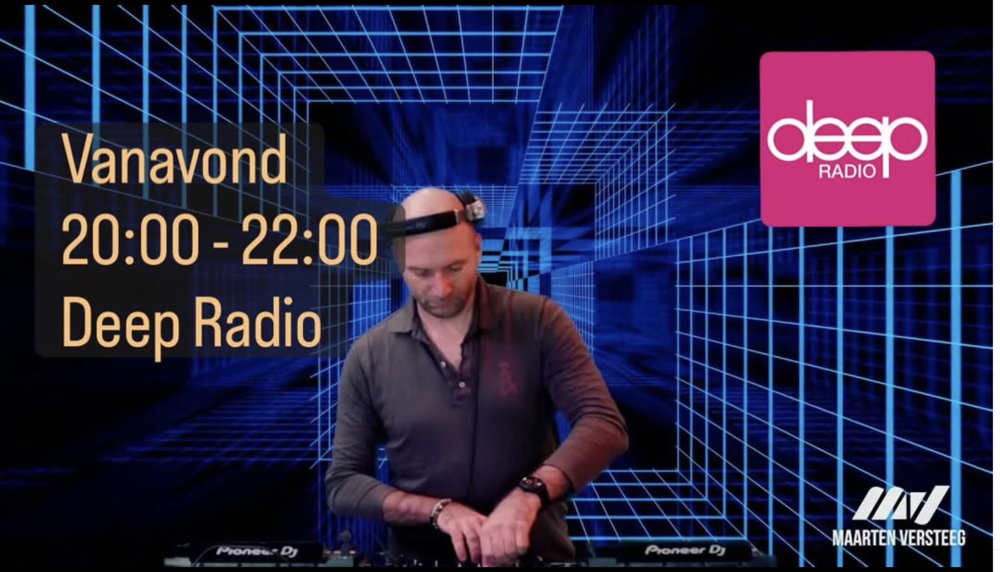

Producten en diensten


Dj-gear
Een dj die binnenkomt en meteen aan het werk kan. Dat is het idee achter onze booth. Met de beste dj-gear, goede monitoring en voldoende werkruimte en opbergplaats.
Bekijk alle dj-gear→Of bekijk alles hieronder ↓Alle producten en diensten

Bekijk dj-gear →
Bekijk onderdeel ↗
Bekijk geluid →
Bekijk onderdeel ↗Bekijk sfeerlicht →
Bekijk onderdeel ↗
Bekijk dansvloerlicht →
Bekijk onderdeel ↗
Bekijk 90’s vintage licht →
Bekijk onderdeel ↗
Bekijk communicatieadvies →
Bekijk onderdeel ↗
Bekijk dj’s en artiesten →
Bekijk onderdeel ↗
Bekijk Coffee cuts →
Bekijk onderdeel ↗
Bekijk custom dj-mix of playlist →
Bekijk onderdeel ↗